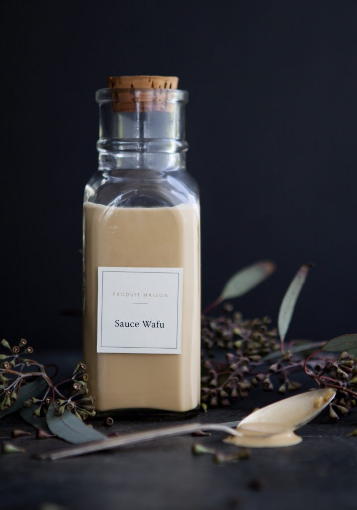

Sauce Wafu Maison
 1 tasse
1 tasse 8 min
8 min-
 Marilou - Trois Fois Par Jour
Marilou - Trois Fois Par Jour
 Meat
Meat

1/4 tassede sauce soya3/4 tassede mayonnaise2 c. à soupede vinaigre de riz2 c. à soupede miel1 c. à soupede gingembre frais, pelé et haché2 c. à souped’huilde de sésame
Fouetter ensemble tous les ingrédients.
Conserver dans un contenant hermétique pendant plusieurs mois au réfrigérateur.